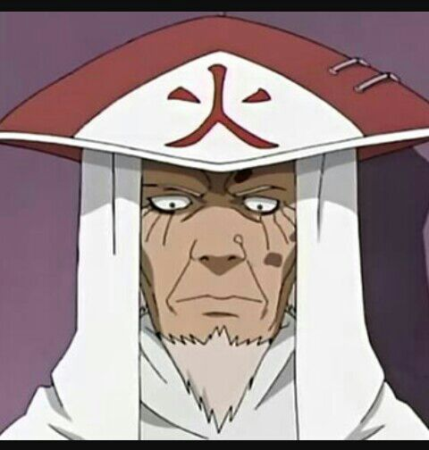

(千手柱間, Senju Hashirama) był członkiem sławnego klanu Senju. Został okrzyknięty jako "Bóg Shinobi" ze względu na swoją niezrównaną waleczność ninja. Hashirama pragnął pokoju w świecie shinobi, co ostatecznie przyczyniło się do założenia Konohagakure ze swoim klanem oraz przyjacielem z dzieciństwa i rywalem: Madarą Uchiha i klanem Uchiha. Następnie został Pierwszym Hokage (初代火影, Shodai Hokage; dosł. „Pierwszy Cień Ognia”) Konohagakure. Choć nie był w stanie osiągnąć pokoju w czasach swojego życia, jego dziedzictwo oraz wizja świata nawet po jego śmierci, nadal kontynuowały kształtowanie wioski i całego świata shinobi.
(千手扉間, Senju Tobirama) był członkiem renomowanego klanu Senju, który wraz ze swoim starszym bratem i klanem Uchiha, założył pierwszą wioskę shinobi: Konohagakure. W czasach swojego życia, Tobirama ciężko pracował, aby zapewnić polityczną stabilizację i wprowadził instytucje, które uczyniły system wioski pracującym, co zapewniło jej ciągłość i dobrobyt. Po śmierci swojego brata, otrzymał tytuł Drugiego Hokage (二代目火影, Nidaime Hokage; dosł. „Drugi Cień Ognia”).
(猿飛ヒルゼン, Sarutobi Hiruzen) był Trzecim Hokage (三代目火影, Sandaime Hokage; dosł. „Trzeci Cień Ognia”) Konohagakure. Będąc uczniem poprzednich Hokage wioski, Hiruzen był potężnym ninja, okrzyknięty jako "Bóg Shinobi". Choć był jedynie nauczycielem Sanninów, pokolenia shinobi z Konohy korzystały z jego wiedzy w czasach jego życia.
(波風ミナト, Namikaze Minato) był Czwartym Hokage (四代目火影, Yondaime Hokage; dosł. „Czwarty Cień Ognia”) Konohagakure. Rozsławił się na cały świat dzięki swojej szybkości, co przyczyniło się do otrzymania przez niego przydomku Żółtego Błysku Konohy (木ノ葉の黄色い閃光, Konoha no Kiiroi Senkō). Zginął w czasie ataku Dziewięcioogoniastego, poświęcając własne życie na zapieczętowanie części Kuramy w swoim nowo narodzonym synu, Naruto Uzumakim.

(綱手, Tsunade) jest potomkinią klanu Senju oraz jedną z Sanninów z Konohagakure; znana również jako najsilniejsza kunoichi na świecie i najlepszy medyczny ninja. Powtarzająca się śmierć bliskich, wywołała u Tsunade paniczny lęk przed krwią oraz późniejsze porzucenie życia shinobi na wiele lat. Została ostatecznie przekonana na powrót do Konohy i przyjęcia tytułu Piątej Hokage (五代目火影, Godaime Hokage; dosł. „Piąty Cień Ognia”), gdzie jej zdolności okazały się być bezcenne dla wioski i jej mieszkańców.